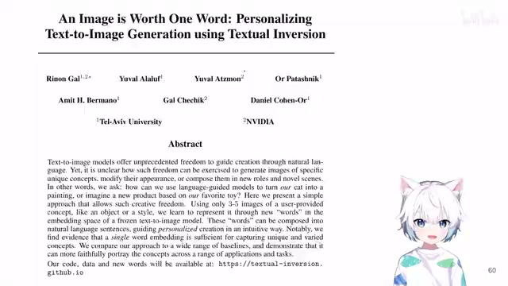
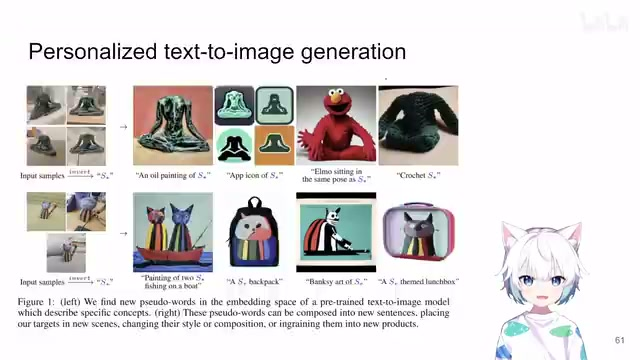
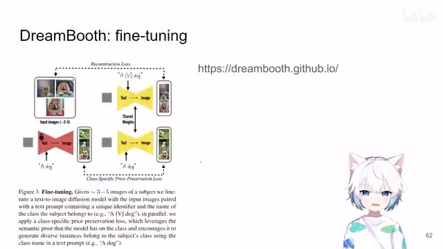
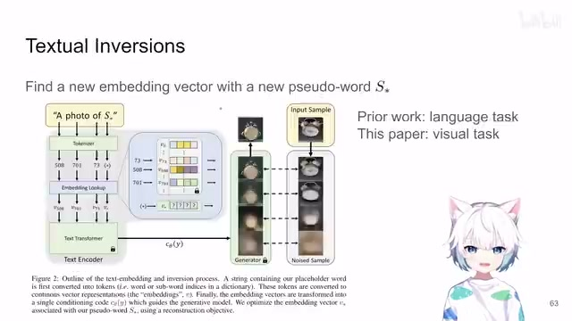
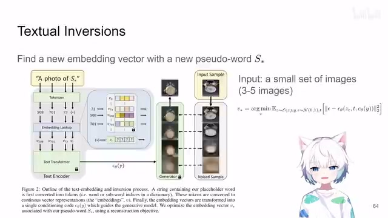
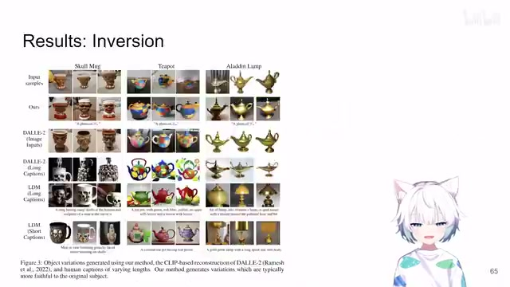
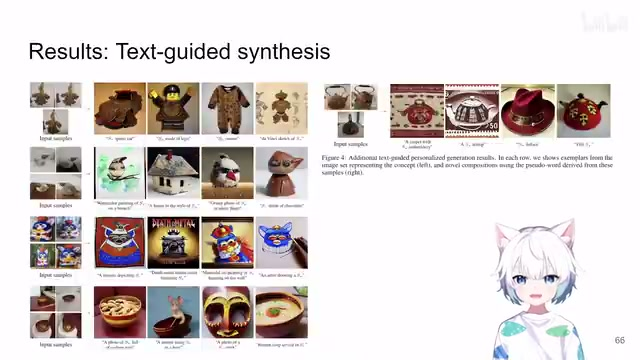

← 返回阅读库 · 原论文目录
论文讲解阅读文档 · 内容生成 · v016
Personalizing Text2Img Generation using Textual Inversion[2208.01618]
视频时长 00:04:38；讲解文字 2,095 字符；提取讲解画面 8 张。按视频原顺序阅读，每段文字保留时间戳。
文字来自整段视频的自动语音转写，按自然停顿分段，并与 PPT / 论文页面 / 演示画面对齐。未将讲解压缩为摘要；术语、数字和口述公式请结合画面及原论文核对。 阅读稿已校正规范部分明确术语误识别；原始逐字稿和每处修改记录另行保留。
讲解画面为源视频截图（640×360），不是可编辑 PPT 文件。全片按每秒 2 帧扫描内容变化，逐步展开页保留；连续动画保留代表画面。清晰度受源视频限制。
下载完整资料包 · 含离线 HTML、PDF、Word、全部 PPT 画面和字幕。
原论文与材料
An Image is Worth One Word: Personalizing Text-to-Image Generation using Textual Inversion · 下载完整 PDF（26 页）
按时间阅读
00:00:00–00:00:15 · 画面 001

00:00:00–00:00:15 · 画面 001大家好,今天我们来快速说一篇论文 An image is worth one wordPersonalizing text-to-image generation using textual inversion 这篇也是稍微有点时间了,是 22 年的它跟我们之前介绍的这个 DreamBooth 是一样的
00:00:15–00:00:42 · 画面 002

00:00:15–00:00:42 · 画面 002都是想要做这个 personalize text image，具体来说呢，就是你给一张啊，你应该是你给三五张这样子的你想要生成的特定物体的这样一个图像，然后呢你把这个图像送给 diffusion，然后呢你让这个 diffusion 去生成啊，在其他情境下的不同画风的等等你指定的这个物体，那么这个呢是本文的要做的这样一个事情那么他呢，甚至比这个 DreamBooth 稍微要更早一些啊，那么 DreamBooth 里面呢，我们之前介绍过了，之前视频里面有，他呢是需要对这个 diffusion model 做一个 fine-tune 啊，然后用这样一个特别的这个文本的标签去标记我们要生成的啊，这样的一个物体啊，这个是 DreamBooth，其实本来要做这个 textual inversions，啊非常简单，就是呢，想要找一个 text embedding 啊，那么这个 text embedding 呢，他
00:00:42–00:01:01 · 画面 003

00:00:42–00:01:01 · 画面 00300:01:01–00:02:25 · 画面 004

00:01:01–00:02:25 · 画面 004实际上可以不对应任何有用的一个单词，但是呢，这个 embedding 这个特定的这个 vector 啊，他呢就是指代着我们输入的这一系列图片中的这个物体那我们来看这个例子这里他用这个 S star这个东西来表示我们想要找的这个特定的单词就是用它来代表我们要生成的这个东西的主体你想作为一个 latent diffusion model你一句话进来它首先要经过这个 tokenizer每一个按照 token 分开对吧每一个 token 它有一个 index然后呢你这个根据这个 index
到你的这个 language model 里面的这个 embedding 里面去查那么每个 index 就变换成了一个 vector那你本质上的本文呢就是要学这样一个 vector那么这个 vector 呢就是你输入的这个图像的这个物体专属的一个单词一个 word embedding那么然后呢这一系列的这个 text embedding 送到你的这个 text encoder 里面最后呢生成一个 vector embedding它就是你的 diffusion model 做生成时候的那个 condition 嘛
然后你交给你的 diffusion model 去生成就好了那么这个呢就是本文的这个核心你可以看到呢，全文下来他没有动 diffusion model，没有动 text encoder 啊，他一开始的 embedding 也没有动，你只不过呢是在一个这个 embedding space 里面去寻找一下你的特定的这个物体他的对应的这个 embedding 是什么，那使用的 loss 呢，也是你 diffusion 里面用的这些这个 noise estimation 这样的 loss 对吧，只不过这次你看到你优化的是你的这个 text embedding 啊，而不是说你整个这个 diffusion 网络
00:02:25–00:03:30 · 画面 005

00:02:25–00:03:30 · 画面 005而训练的过程呢，跟标准的 Diffusion Model 一样，所以呢，这是一个非常直接的设计，一个简单的改动，就把我们的这个物体所表示出来了，你想这个事情其实是很符合直觉的，你想，对于这样一个物体，你需要用多少长的句子，详细的描述去把这样一个独一无二的东西给它描述出来那么与其浪费说这么多单词去模糊的描述这样一个图片，那我不如说就在我的这个 embedding space 里面找到这么一个 token，找到这么一个 embedding，让它能够描述我们的这个物体对吧，不管你当下的境遇如何，在 embedding space 里面总有你自己的位置，那么这个呢，就是本文最核心的一个思路，那我们直接来看到作者演示的结果
00:03:30–00:04:06 · 画面 006

00:03:30–00:04:06 · 画面 006首先呢是这个 inversion 对吧，我根据我输入的这个图像我取一反三，我能不能生成一些这个输入图像的主体跟它相似的这样一个图像呢对吧，你可以看到本文的这个方法是非常好的，那么相比于这些方法，你要把这个输入的图像先变成文字的 caption，然后呢再根据这个文字的 caption 再去这个生成它相应的图样，生成它相应的图像，那生成出来的东西就就没边了对吧，这原图就差的比较远了，那这个呢是一个最基础的用法，那当然呢你可以做更多的对吧，你既然现在已经有一个单词去描述你要生成的这个物体，你完全可以把它放到不同的场合里面，把它放到不同的画风里面对吧，生成各种各样的图像，那总的来说呢，这篇有年代的文章用了非常小的改动啊，来帮我们实现了这个 personalize 这个 image synthesis 啊
00:04:06–00:04:37 · 画面 007

00:04:06–00:04:37 · 画面 007是一个很有意思的工作，那么在后面呢也启发了一系列的这样的相关的工作，好的，那么以上就是我对这个论文的一个快速的整理，那么感谢你的收看，请多多指点
00:04:37–00:04:38 · 画面 008
00:04:37–00:04:38 · 画面 008转写与来源说明 · 1 个自动复核提示
保留 39 个原始语音片段，1 个片段触发自动复核提示。提示仅用于定位可能的术语、重复或识别问题，不等于已确认错误。
讲解画面为源视频截图（640×360），不是可编辑 PPT 文件。全片按每秒 2 帧扫描内容变化，逐步展开页保留；连续动画保留代表画面。清晰度受源视频限制。
原视频：paper/合集_2026-10-16_内容生成/[论文速览]Personalizing Text2Img Generation using Textual Inversion[2208.01618].mp4
SHA-256：01383698dee007a2a3c8baa80738aafddba2d00e5b4795a9e589b454df007588
一个 word embedding
全文按视频语音与画面制作。原论文可从上方链接下载；完整资料包保留全文、原始逐字稿、字幕和校对记录。